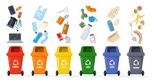

¿Por qué es importante reciclar? ♻️

Cada año, millones de toneladas de residuos terminan contaminando nuestros suelos, ríos y mares. El reciclaje es una forma efectiva de reducir el impacto ambiental, ahorrar recursos naturales y proteger la salud del planeta.
- Reduce la contaminación del agua, el aire y el suelo.
- Disminuye el uso de energía y recursos naturales.
- Ayuda a combatir el cambio climático.
- Fomenta la economía circular y la generación de empleos verdes.
¿Cómo separar los residuos? 🧃
- Orgánicos: restos de comida, cáscaras, hojas, etc.
- Plásticos: botellas, envases, bolsas limpias.
- Papel y cartón: hojas, cajas, cuadernos (sin grasa ni comida).
- Vidrio: botellas y frascos (limpios y sin tapas).
- Residuos especiales: pilas, electrónicos, aceites (llévalos a puntos limpios).
Cuidado comunitario: el valor de actuar juntos 🧑🤝🧑

La comunidad juega un papel crucial en la gestión de residuos. Juntos podemos impulsar cambios reales, desde la educación ambiental hasta la participación en proyectos de reciclaje.
Acciones para un mundo más verde 🌱
- Promover campañas de sensibilización sobre reciclaje.
- Implementar puntos de reciclaje en barrios y escuelas.
- Fomentar la reducción de residuos desde el hogar.
- Recoger plásticos y vidrios para su reciclaje.
Talleres y actividades 🛠️
Participa en nuestros talleres prácticos donde aprenderás a reciclar y a crear nuevos productos a partir de materiales reciclados. ¡Tu creatividad puede hacer una gran diferencia!